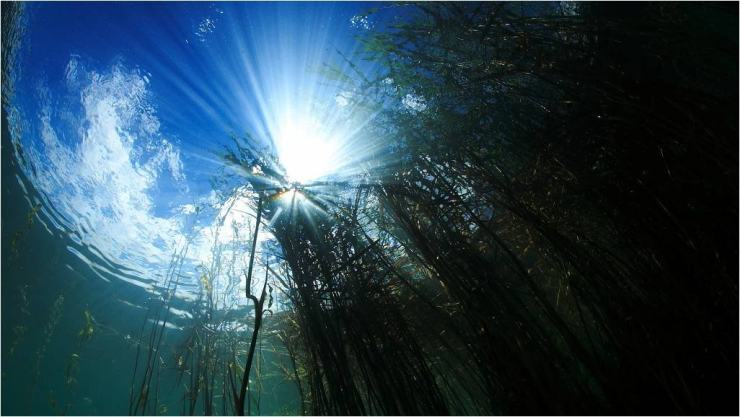
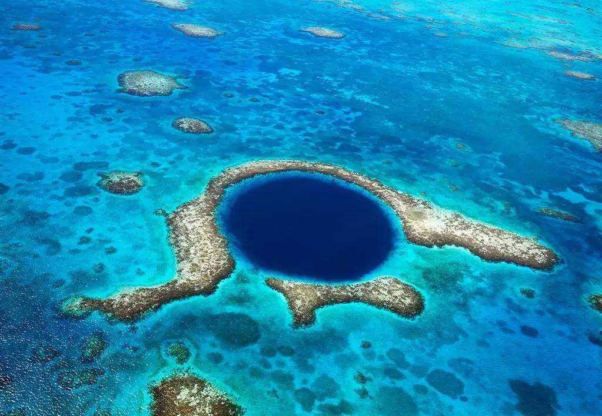
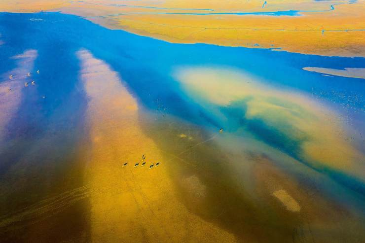
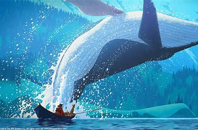

它占据超过地球70%的面积，而人们已探索完全的，不超过10%，而仅仅这10%的资源，对人们来说便无法估量。
海洋，是地球上最广阔的水体的总称。海洋的中心部分称作洋，边缘部分称作海，彼此沟通组成统一的水体
海洋是地球的心脏。正如心脏为身体的各个部位提供血液一样，海洋将全球的人们联系在一起。

地球上海洋总面积约为3.6亿平方千米，约占地球表面积的71%，平均水深约3795米。海洋中含有十三亿五千多万立方千米的水，约占地球上总水量的97%，而可用于人类饮用只占2%。

。当今人类已探索的海底只有5%，还有95%大海的海底是未知的。
不同的海洋的颜色有区别，例如黄海，红海，黑海等等，这是由于海水中物质对太阳光的吸收不同而导致的。
海洋中的生物和资源是陆地上所无法比拟的。而很多的生物之最，例如最大的动物，最快的动物等等也都诞生于海洋。
